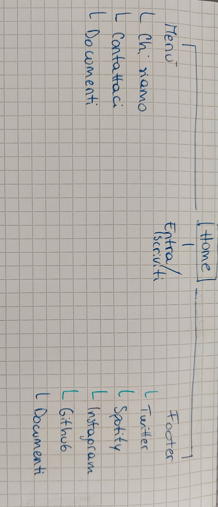

Documenti
Abstract, Project Management Plan, Communication Strategy Plan
Abstract
Memodies è il progetto di un nuovo social basato sulla musica e sui ricordi che ognuno collega a singole canzoni. Permette a persone di ogni età di raccontarsi condividendo il proprio passato e di conoscere nuove persone da un punto di vista particolare.
Il sito web prevede l’integrazione di un’applicazione per smartphone ed è completamente gratuito. Nasce per un pubblico italiano ma è predisposto ad un’integrazione multilinguistica.
Project management Plan
• Benchmarking
1. Obiettivi
Il sito intende fornire una piattaforma agli utenti per connettersi con altre persone appassionate di musica e condividere esperienze e memorie legate a questa.
2. Target utente
Persone di ogni età, sesso ed estrazione sociale, che abbiano accesso a un pc/smartphone/tablet dotato di connessione internet e appassionate di musica.
3. Competitors
Per la competizione ho preso visione delle principali piattaforme social che si occupano di musica:
- Youtube: permette di ascoltare, condividere e commentare, ma a differenza di x ha un target molto più vasto (non si occupa solo di musica ma anche di altre cose) e mette al centro i prodotti, non i commenti del singolo utente;
-Soundcloud: questa piattaforma permette di condividere nuova musica, ascoltare brani, repostarli. È molto utilizzato da parte di artisti e artisti emergenti per costruire una fanbase e utenti interessati alla novità. X, al contrario, si focalizza sul passato e i ricordi.
-Spotify: non prevede la possibilità di lasciare commenti, serve principalmente per ascoltare musica;
…e di vari forum musicali: generalmente ogni forum si concentra su qualcosa di specifico, come uno specifico strumento, o dei materiali per la produzione etc. Inoltre mantengono tutti la classica struttura forum un po’ antiquata e lontana dal gusto estetico del navigatore odierno.
• Struttura e layout
1. Architettura del sito

Figura 1: architettura ad albero del sito, comprensiva dei link interni (blu) e dei link esterni (azzurro)
2. Wireframe
Figura 3: le altre tre pagine del sito presentano lo stesso wireframe, il logo, il menù e il footer sono uguali a quelli della home
3. Look and Feel
- Tutte le pagine hanno uno stile molto semplice e minimalista, che permette una navigazione rapida ed evita confusione all’utente
- La palette è composta principalmente da due colori (#edcede e #ceeded) che si alternano nei vari dettagli; i testi sono in grigio o bianco. Il contrasto tra i due colori risulta simpatico e giovanile
- Per i font ho usato solo font sans-serif, che trovo più puliti e minimalisti e quindi in linea con il resto del sito
- Nei mock-up del social (homepage e profilo personale) ho alternato due font differenti dal resto del sito, un serif per i titoli e un sans serif
- Oltre ai mock up ho inserito un’immagine di background per il banner della home che richiama la comunicazione tramite musica e altre due immagini che rimandano a varie situazioni in cui la musica potrebbe averci permesso di creare bei ricordi
- Il logo del sito, che appare anche coma favicon, presenta a sua volta elementi musicali e social su una base dei colori del sito
• Linguaggi e strumenti
1. Linguaggi
- HTML5
- CSS (e SCSS)
- Javascript
2. Strumenti
- templated.co per il template di base (html, css, scss, jv)
- pixabay.com per le immagini presenti nella home
- pixrl.com editor per modificare le immagini, creare il logo e i mock-up
- fontawesome.com per le icone
- Sublime Text 3 per scrivere il codice
- Google Chrome per visualizzare il sito e ispezionare gli elementi
- favicon.ico per la creazione del favicon
- Instagram e Whatsapp per la condivisione e la promozione
- Google Analytics per le statistiche delle visite al sito
Communication Strategy Plan
• Background
Ci sono moltissime piattaforme incentrate sulla musica, che sia per ascoltarla, condividerla, parlare di generi, band o strumentazioni tecniche. Quello che manca è un modo di condividere la cosa più grande che la musica fa: darci emozioni, sottolineare eventi significativi della vita e farci riflettere su una miriade di argomenti. Memodies dà la possibilità di condividere tutte queste cose con i amici e conoscenti.
• Obiettivi comunicativi
Questo progetto vuole permettere alle persone di ricordare canzoni che sono state importanti per loro e ritrovare nella community altri che sono entrati in contatto con le stesse. Vuole stimolare il confronto, dare valore al singolo utente e condividere la varietà umana, perché anche se ogni generazione è cresciuta con delle canzoni specifiche, i ricordi di ognuno sono differenti e di valore.
• Target audience
Target:
- Ragazzi e giovani adulti abituati a condividere sé stessi sui social e a cui piace la musica (gruppo molto ampio)
- Adulti che vogliono ritrovare note del passato e condividere questa parte della loro vita con altre persone della stessa generazione, nonché farle conoscere alle nuove
- Utente casuale a cui piace la musica o che cerca nuove possibilità di conoscere persone.
Tutti questi gruppi vengono raggiunti tramite social già stabiliti, piattaforme musicali e community dedicate alla musica. Le uniche condizioni per usufruire di Memodies sono un dispositivo dotato di connessione Internet e una conoscenza base di come utilizzarlo, oltre alla conoscenza dell'italiano.
Lo scopo di Memodies è di dare a queste persone uno strumento più dedicato e specifico per raccontarsi e condividere se stessi con altre persone in relazione alla musica; sensibilizzare sul fatto che anche se spesso la musica oggigiorno è vista come un passatempo individuale, tutti siamo legati alle stesse cose.
• Promozione
Per la promozione di Memodies ho condiviso il link del sito nelle storie di Instagram e in gruppi Whatsapp che rispecchiano il primo e terzo gruppo del target.
Gli obiettivi prefissati erano quindi di 100 visualizzazioni alla storia e 120 nuovi utenti distinti sul sito.
• Valutazione dei risultati
Il sito è stato accolto positivamente sui social e ha totalizzato 215 nuovi utenti ad oggi (26/05/2022).
La storia di Instagram, al termine delle 24 ore, aveva totalizzato 143 visualizzazioni.
Nelle immagini allegate si può notare i picchi di nuovi utenti in corrispondenza della condivisione diretta e quella social.